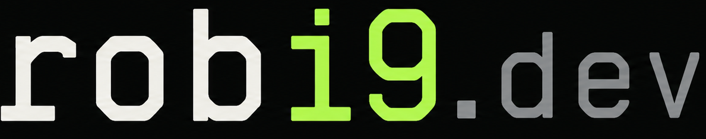

20M+usuários
experiência sustentando plataformas e arquiteturas de alta escala

Vamos conversar ↗DEVOPS · CLOUD · PLATFORM ENGINEERING
Arquitetura, confiabilidade e custos tratados como uma só disciplina — para empresas que precisam escalar sem escalar o caos.
IMPACTO, NÃO INVENTÁRIO
experiência sustentando plataformas e arquiteturas de alta escala
da infraestrutura à liderança de arquitetura e cloud
automação, confiabilidade, custos e entrega contínua
Histórico com passagens por operações de tecnologia, Amdocs, fortú, I9 Cloud Solutions e Amicci.
COMO EU ATUO
Trabalho na interseção entre decisão técnica, operação e resultado de negócio. É onde arquitetura deixa de ser diagrama e começa a entregar vantagem.
Arquiteturas AWS e Kubernetes desenhadas para crescer com previsibilidade — sem pagar pela complexidade antes da hora.
AWS · EKS · RDS · CLOUDFRONT · TERRAFORMObservabilidade, segurança e disaster recovery convertidos em rotinas claras, sinais úteis e respostas treinadas.
OPENTELEMETRY · PROMETHEUS · GRAFANA · GITOPSFinOps orientado a decisões: entender o que custa, por que custa e o que vale mudar sem comprometer a plataforma.
AWS COST EXPLORER · RDS · CAPACITY PLANNINGPadrões, documentação e formação técnica para reduzir dependências e criar autonomia real no time.
TECHNICAL LEADERSHIP · ENABLEMENT · ARCHITECTUREEvolução de uma operação AWS com Kubernetes, observabilidade, segurança, governança de custos e estratégia de disaster recovery multi-região — enquanto o time ganhava autonomia para operar a própria plataforma.
ALÉM DA INFRAESTRUTURA
Depois de uma década em DevOps, ficou claro que o maior gargalo raramente é a tecnologia. Meu trabalho hoje é criar o sistema técnico e humano que permite à empresa avançar sem depender de uma única pessoa para apagar incêndios.
Sou líder técnico na Amicci e cofundador da Thria Technologies e da I9 Cloud Solutions. Produtos próprios me mantêm perto do risco real: prazo, custo, cliente e produção.
SE SUA CLOUD CRESCEU MAIS RÁPIDO QUE SUA OPERAÇÃO,